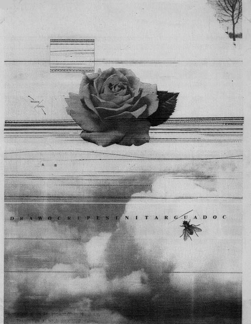
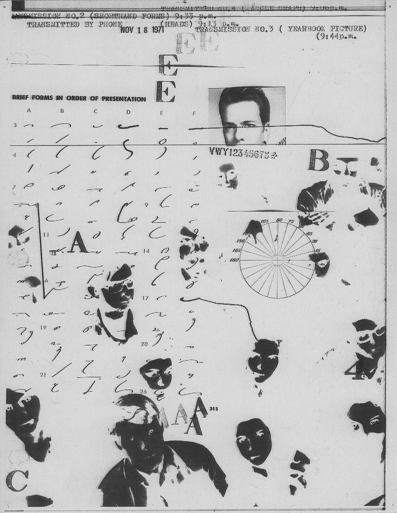
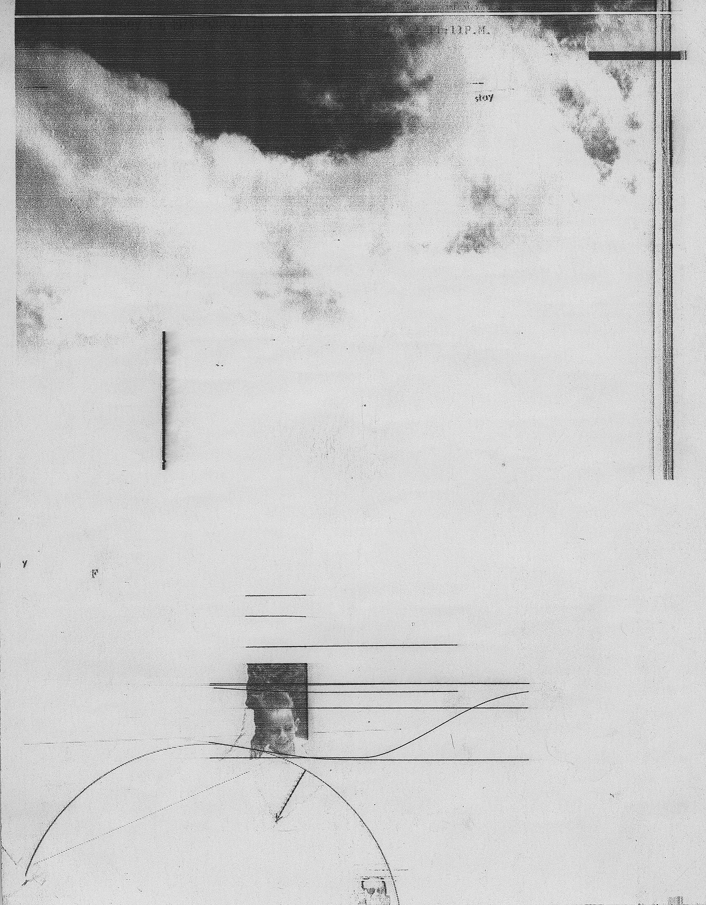

Fireflies
William Larson
1969 – 1978




“The results are partly-unintentional collages where texts and images are merged by the fax itself. Larson would feed the machine with pieces of paper, photographs and even sounds which could be visually translated by the fax. Glimpses of abstraction, surrealism and concrete poetry appear in this early conceptual exploration of digital technology.”
- Mariabruna Fabrizi
February 23, 2017
The design shows the thinking of the fax machine (how it understood what is fed, photos, sounds, etc.)? I should definitely add the name of the fax machine in "designer".